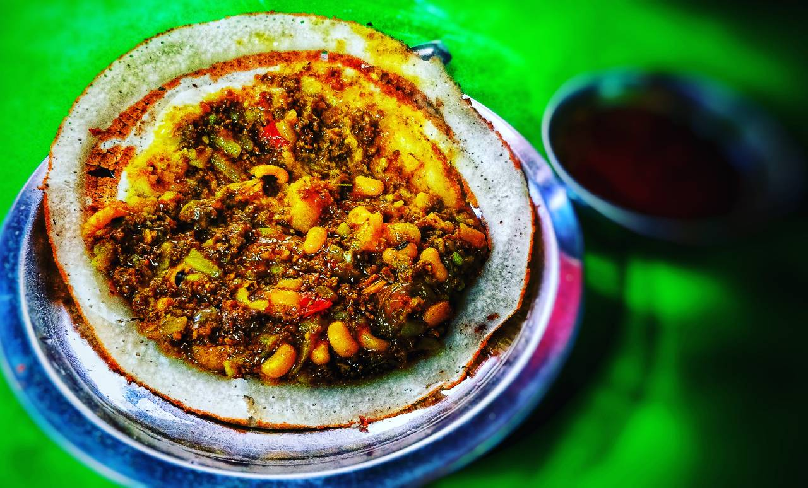

Recipe for the Chatamari.

Chatamari, also known as Nepali pizza, is a traditional Nepali dish that is made with a rice flour base and topped with a variety of savory ingredients. It is a popular street food in Nepal and is often served as a snack or a light meal.
Chatamari is a delicious and versatile dish that can be customized to suit individual preferences. Whether you prefer a meat or vegetarian version, spicy or mild, chatamari is a satisfying and flavorful Nepali dish that is sure to please your taste buds.
Ingredient for the recipe.
For the base:
- 1 cup rice flour
- 1/2 cups water
- Salt to taste
For the toppings:
- 1/2 cup minced meat (chicken, lamb or buffalo) or vegetables (mushrooms, onions, bell peppers, etc.)
- 1/4 cup chopped fresh cilantro leaves
- 1/4 cup grated cheese
- 1 egg
- Salt and pepper to taste
- Oil for cooking
For the tomato sauce:
- 2 large tomatoes, chopped
- 2 cloves of garlic, minced
- 1 small onion, chopped
- 1 teaspoon red chili powder
- Salt
- 1 teaspoon ground cumin
Instruction for the recipe
For tomato sauce
- In a saucepan, heat oil over medium heat. Add chopped onion and sauté until translucent.
- Add minced garlic and sauté for a minute.
- Add chopped tomatoes, red chili powder, ground cumin, and salt. Mix well.
- Cover the saucepan and cook for 5-7 minutes, until the tomatoes are soft and cooked.
- Transfer the tomato mixture to a blender and blend until smooth.
For chatamari
- In a mixing bowl, add rice flour, water, and salt. Mix well to form a smooth batter.
- Heat a non-stick pan or a griddle over medium heat. Grease it with some oil.
- Pour a ladleful of batter onto the pan and spread it evenly in a circular shape to form a thin base.
- Cook for 3-4 minutes until the base is firm and slightly golden.
- Now in a small mixing bowl, add minced meat or vegetables, cilantro leaves, grated cheese, egg, salt, and pepper. Mix well to combine.
- Spread the topping mixture evenly over the rice flour base.
- Cover the pan and cook for 5-7 minutes over medium heat, until the toppings are cooked and slightly melted.
- Now cut the chatamari into slices or wedges.
- Drizzle the tomato sauce over the chatamari.
- Garnish with chopped cilantro leaves.
- Serve hot and enjoy your delicious Nepali pizza, chatamari!
Now enjoy your delicious Nepali pizza, chatamari!
Return to the top
Return to the main page